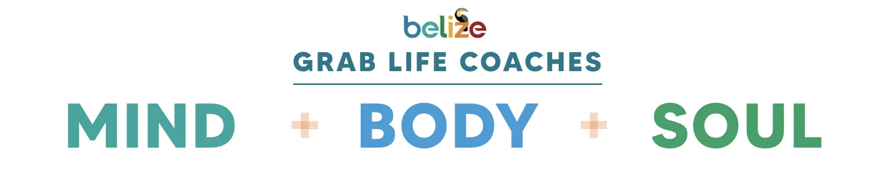
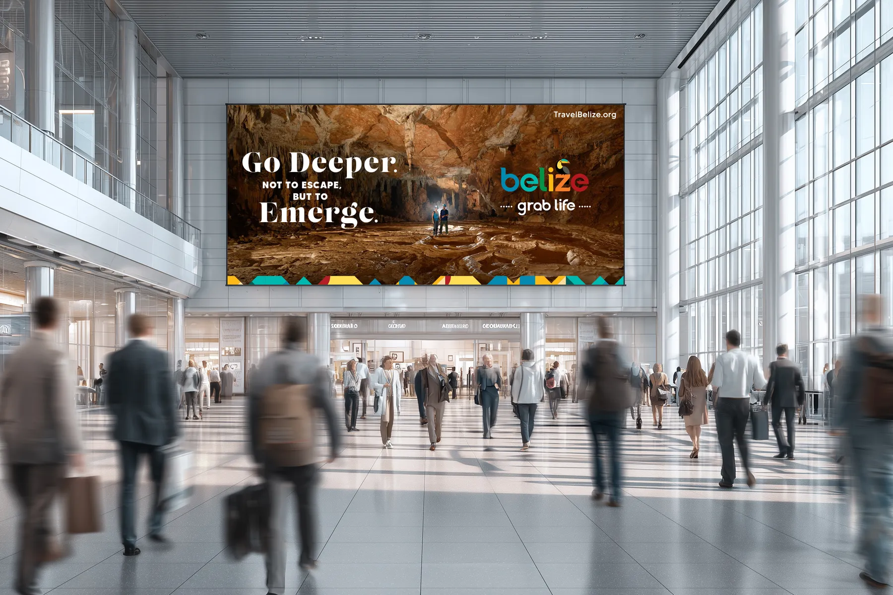
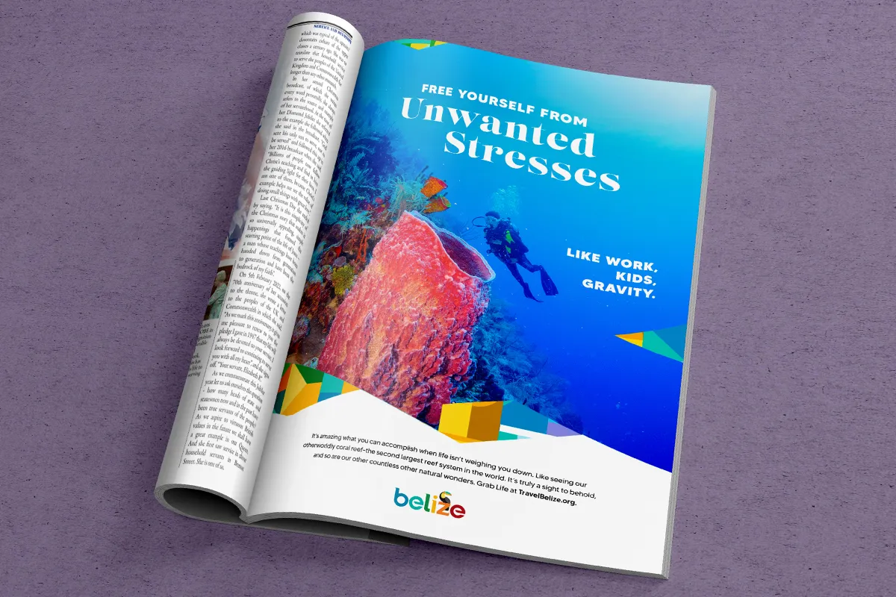
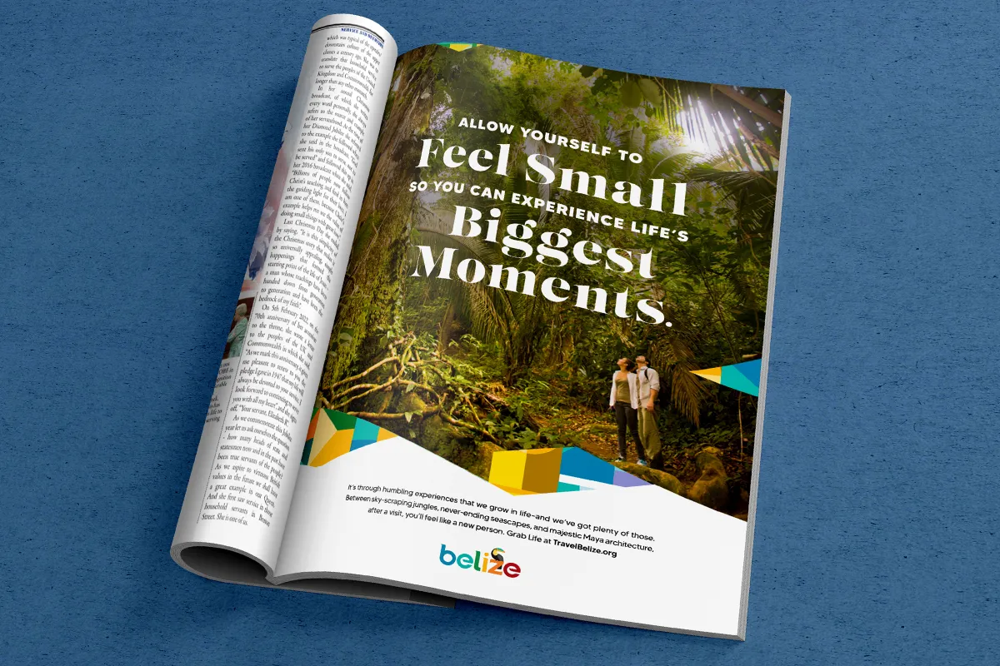
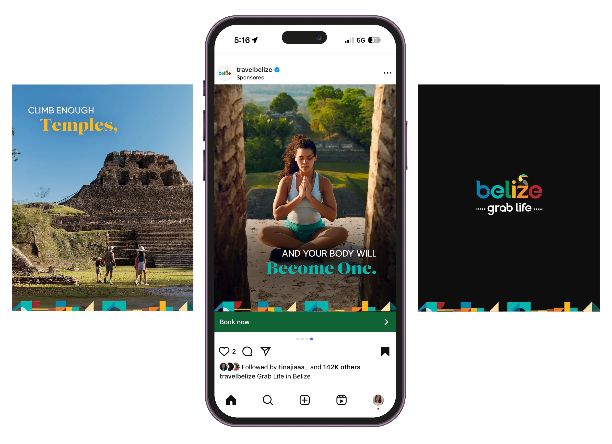
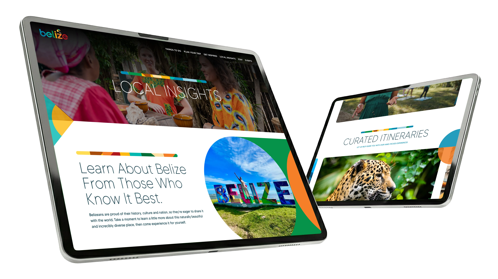
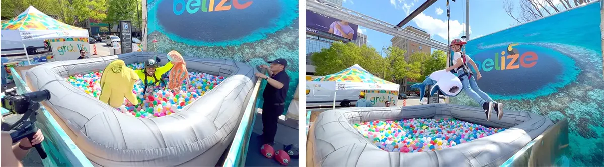
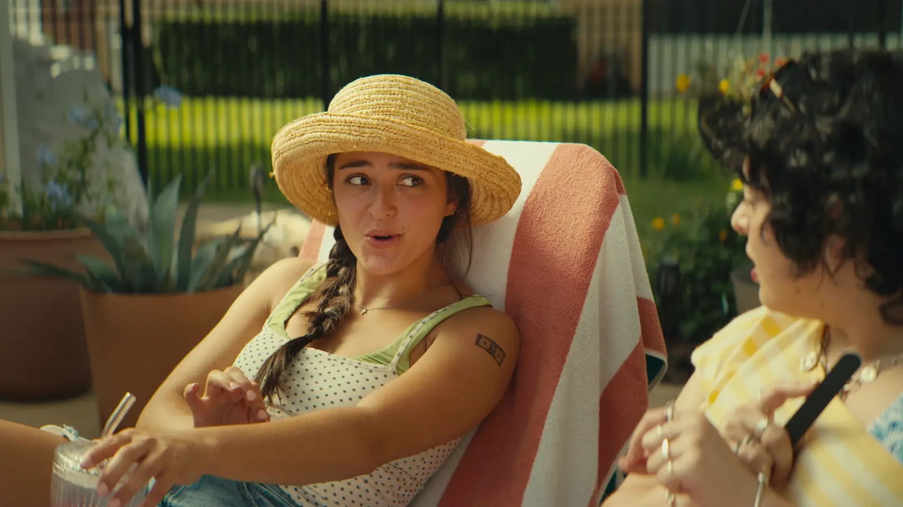

Grab Life was created to position Belize as an accessible destination for adventure seekers, but as traveler priorities shifted post-pandemic, the platform evolved.
Adventure alone was no longer enough; travelers were seeking culture, meaning, and well-being alongside exploration.
We introduced the Grab Life Coaches of Mind, Body, and Soul, grounding the campaign in real Belizeans who embody the destination. Mind focused on wellness and restoration, Soul celebrated culture and heritage, and Body carried forward the spirit of adventure from reef to rainforest. The result was a campaign that let Belizeans lead the story, inviting travelers to experience Belize not just as a place to visit, but a place to feel.





Owned Channel Integration
The Grab Life Coaches extended into social and Belize’s trip-planning app, guiding travelers with personalized itineraries, curated recommendations, and a chatbot that spoke in the voice of a coach, turning inspiration into action.

Grab Life Activation
We showed people how to grab life spiritually, physically, and culturally. Then we invited them to literally grab life as a human claw machine.

Credits
Director: Ross Haines · Photographer: Pedro Oliveira · SEED
- Chief Creative OfficerJennifer Bell
- Creative DirectorAdam LaRocca
- Creative DirectorJason Piroth
- Senior Art DirectorTJ Stacy
- Senior CopywriterMatt Johnson
- Art DirectorEmily Bernstein
- AgencyBright Red (OMC)

Next project
Love the Pig. Live the Pig. TV
Piggly Wiggly Food For Less